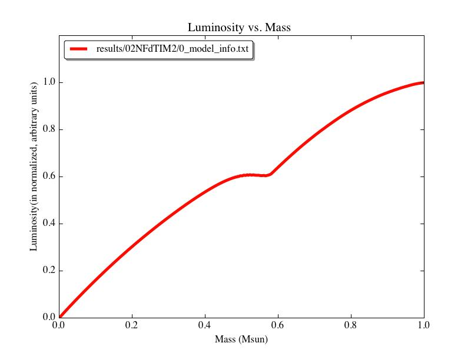

| Name of this run | Input/Starting Model | Mass of the system (in Msun) | Parameter being tweaked = new value | Version of TheCode.f used to run the simulation | Results | |||||||||||
| 02NFSmax1 | 02NoFusionCont, from model #62 | 0.2 | SMAX (lum)= -1e30 | thecodeNoFusion | Exactly the same as the 02NoFusionFromStep62 from yesterday. Interestingly, it looks like the models that 'flip' require around 60-80 iterations to converge, while the other, normal models only require 2-3 iterations. Therefore, I think the key may lie in reducing ITMX. |
|||||||||||
| 02NFItmx1 | 02NoFusionCont, from model #62 | 0.2 | ITMX = 10 | thecodeNoFusion | This adjustment causes the run to 'stop: convergence not possible' at the first 'flippy' timestep. That error occurs because the code only gets 3 tries to reduce the timestep size before giving up. The dTime values for the two preceeding models were ~5e13 seconds. So, I think the way around this error to set the initial timestep for the run to 1e11 seconds, while keeping ITMX = 10. |
|||||||||||
| 02NFdTIM1 | 02NoFusionCont, from model #62 | 0.2 | dTIM = 1e11 | thecodeNoFusion | dTIM is still not low enough (I'm guessing) by the time the simulation encounters the 'flippy' step, though that step is pushed back by a few. That's just because the original code is taking more timesteps across the same interval of time, though. Maybe if I take the final step before the flip, and evolve it forward enforcing really strict limits on the dTmx and dTim values...? |
|||||||||||
| 02NFdTIM2 | 02NFdTIM1, from record #4 | 0.2 | dTmx = 1e13, dTim = 1e9, dTmn = 1e0 | thecodeNoFusion | It just... stops after 1 (or 0?) timesteps without any error message or anything. Another mysterious stop! Looking at the input model's luminosity profile see below), I see that it's starting from a pretty 'kinked' profile. By the time the model reaches this state, it may be too late. So, let's try starting this same simulation, but from record #62 of 02NoFusionCont and see how much of a difference that makes. Figure 1 I also wonder if that plateau in the luminosity profile is arising due to the Crad/Cwrk settings that have been in the input files. In particular, I reduced Crad to 1e-10 to get past a 'stop: invstate' error earlier in the 0.2Msun no-fusion system's evolution. I wonder if increasing Crad back to 1 will prevent this strange luminosity profile from ever even developing...? (Note to self: check that the luminosity profile of that input model isn't also already 'kinked') (Response to self: it is, quite badly. You have to go back to record #?? in the 02NoFusionCont run to get a perfectly smooth profile.) |
 |
||||||||||
| 02NFSmax2 | 02NoFusionCont, from model #59 | 0.2 | SMAX (lum)= -1e30, | thecodeNoFusion | Stops during model #610 (so, the model that would have been recorded right after record #19) with a 'stop: no convergence' error. (Again, one of those dTIM limitations...) The real question, though, is whether the models in this run start to develop that 'kink' in their luminosity profiles... Short answer: yes. Longer answer: it does this in a really interesting way. See Figure 2 below: Figure 2 This is really interesting for several reasons: The model right before the red profile develops (i.e. the green one) is still perfectly smooth. So, that kink develops within ~40-50 iterations within a single timestep. The penultimate and initial profiles (green and black) for this run barely differ. In other words, the luminosity profile is steady over a long-ish period of time, and then all of a sudden, BOOM! A discontinuity develops! The shapes of the final model from this run (red) and the final converged model in the 02NoFusionCont run (blue) look the same, only rotated 180 degrees from each other. (Well, actually, that's not strictly accurate. If you flip the image 180 degrees, you can see that they differ at the inner and outer boundaries.) It looks like the magnitudes of the slopes of blue section A and red section B are roughly equal, while their signs are reversed. Same for red section A and blue section B. Because of the stuff mentioned in #3, I have a suspicion that this all has something to do with how some slope is getting calculated. SMIN is the only luminosity parameter involved with derivative calculations (I think...), so the logical step is to tighten the restrictions on that parameter. |
|||||||||||
| 02NFSmin1 | 02NoFusionCont, from model #59 | 0.2 | Smax (lum) = -1e30, and Smin (lum) = 1e10 | thecodeNoFusion | Results are similar to 02NFSmax2, though I should note that this run doesn't throw any errors, has a final model with a reasonable luminosity profile, and could likely keep evolving forward in time with no problems. Figure 3 For the next step, I'd like to see what happens when I decrease the luminosity SMIN value even more. |
|||||||||||
| 02NFSmin2 | 02NoFusionCont, from model #59 | 0.2 | Smin (lum) = 1.0 | thecodeNoFusion | Results very similar to 02NFSmin1-- luminosity flips look identical... though that seems odd to me. Maybe there was a parsing error of some sort going on? B/c their HR diagram evolution differs, as to the shapes of their luminosity profiles after their first luminosity 'flips.' In any case, the SMIN (luminosity) parameter doesn't have a huge effect on whether or how these 'flips' arise, so I'm going to move on to tweaking the Crad parameter. |
|||||||||||
| 02NFCrad1 | 02NoFusionCont, from model #59 | 0.2 | Crad = 1 | thecodeNoFusion | The results are exactly like those from 02NFSmin2. Increasing the Crad value has absolutely no effect. Upon examining how much the luminosity values change from model 3 to model 4 (the first flip in this run), I think perhaps the next thing to do is to decrease the SMAX (luminosity) value even more... |
|||||||||||
| 02NFCrad1 | 02NoFusionCont, from model #59 | 0.2 | Crad = 1 | thecodeNoFusion | The results are exactly like those from 02NFSmin2. Increasing the Crad value has absolutely no effect. Upon examining how much the luminosity values change from model 3 to model 4 (the first flip in this run), I think perhaps the next thing to do is to decrease the SMAX (luminosity) value even more... |
|||||||||||
| 02NFSmax3long | 02NoFusionCont, from model #59 | 0.2 | NMOD = 1000, NRIT = 25, and changed Smax (lum) = +1e28 (rather than -1e28) | thecodeNoFusion | Crashed on model #616 (25th model it computed in this run) with a 'stop no convergence' (timestep problem). <-- This was fixed by changing the SMAX (luminosity) value to a positive number (rather than keeping it negative). | |||||||||||